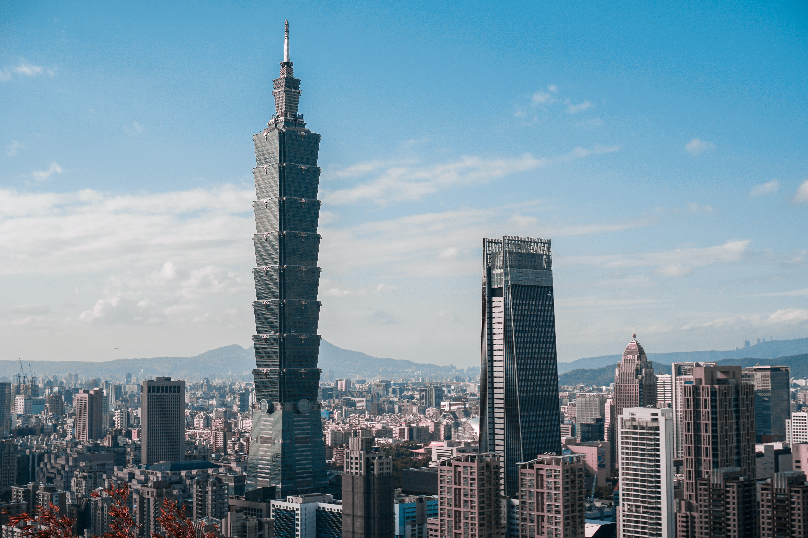

It's a website about Taipei, Taiwan.
WELCOME TO TAIPEI!
Wiki says:
Taipei (/ˌtaɪˈpeɪ/),[4] officially Taipei City,[I] is the capital[a] and a special municipality of Taiwan.[7][8] Located in Northern Taiwan, Taipei City is an enclave of the municipality of New Taipei City that sits about 25 km (16 mi) southwest of the northern port city of Keelung. Most of the city rests on the Taipei Basin, an ancient lakebed. The basin is bounded by the relatively narrow valleys of the Keelung and Xindian rivers, which join to form the Tamsui River along the city's western border.[9]
The city of Taipei is home to an estimated population of 2,646,204 (2019),[10] forming the core part of the Taipei–Keelung metropolitan area, which includes the nearby cities of New Taipei and Keelung with a population of 7,047,559,[10][11] the 40th most-populous urban area in the world—roughly one-third of Taiwanese citizens live in the metro district. The name "Taipei" can refer either to the whole metropolitan area or just the city itself.
Taipei is the economic, political, educational and cultural center of Taiwan and one of the major hubs in East Asia. Considered to be a global city and rated as an Alpha − City by GaWC,[12] Taipei is part of a major high-tech industrial area.[13] Railways, highways, airports and bus lines connect Taipei with all parts of the island. The city is served by two airports – Songshan and Taoyuan. Taipei is home to various world-famous architectural or cultural landmarks, which include Taipei 101, Chiang Kai-shek Memorial Hall, Dalongdong Baoan Temple, Hsing Tian Kong, Lungshan Temple of Manka, National Palace Museum, Presidential Office Building and Taipei Guest House. Popular shopping districts including Ximending as well as several night markets dispersed throughout the city. Natural features such as Maokong, Yangmingshan and hot springs are also well known to international visitors.In English-language news reports, the name Taipei often serves as a synecdoche referring to central government of Taiwan. Due to the ambiguous political status of Taiwan internationally, the term Chinese Taipei is also frequently used as a synonym for the entire country, as when Taiwan's governmental representatives participate in international organizations or Taiwan's athletes compete in international sporting events.
PIC I

PIC II

PIC III

More:
NewYork
London